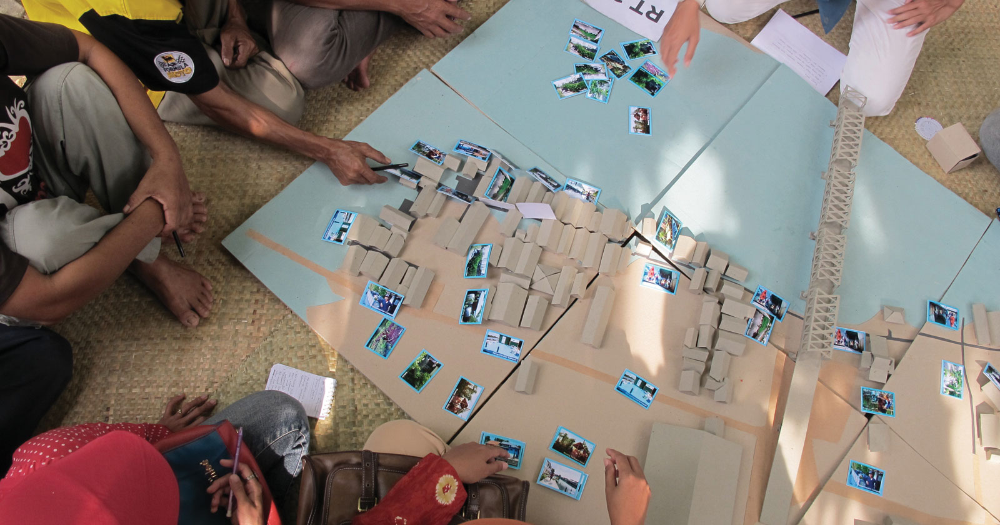
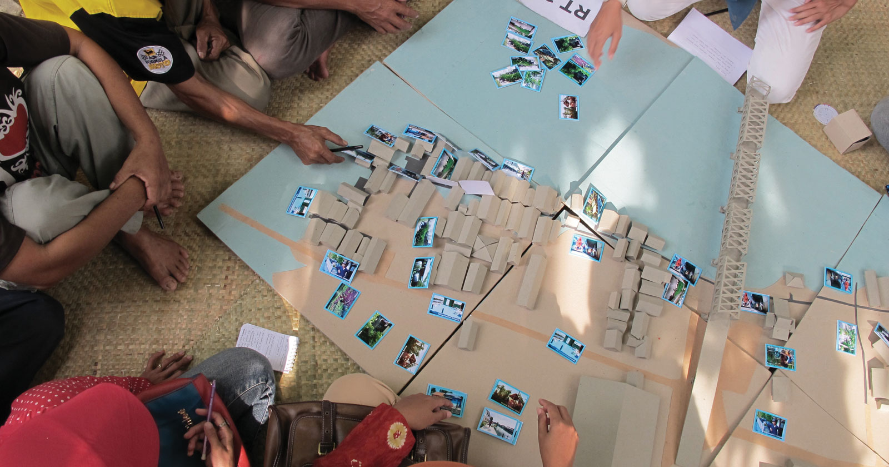

Through a participatory campaign, residents worked with the Solo Kota Kita design team to envision a new waterfront public space. The project positions Banjarmasin’s rivers as an asset for sustainable development and is a catalyst for future investments in basic services.


Our team organized a series of participatory workshops during which residents proposed ideas for improving their neighborhood. The team then developed a design for one of the ideas in partnership with the local Banjarmasin government and with the support of the AECOM UrbanSOS program.
These activities and the design are documented extensively in the "Social Design Field Guide."
 



The public space steps down to the water and creates multiple ways to engage the river through fishing and other activities. It also provides flexible open and shaded space, which the area lacks. The shaded area also provides seating for an adjacent food stall, thereby supporting another local economic activity.